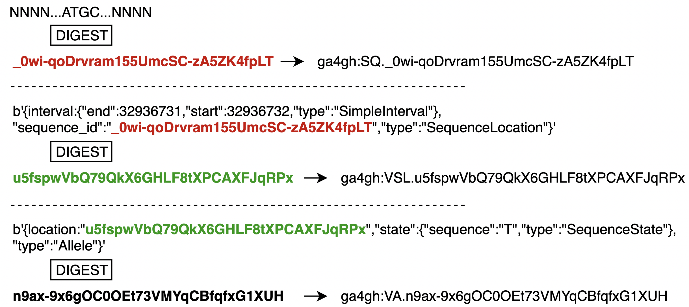

One of the main contributions of VRS is an information model which can be used to represent the components of an instance of variation. The objects from the information model included in this tool suite are:
The following description comes from the specification.
VRS provides an algorithmic solution to deterministically generate a globally unique identifier from a VRS object itself. All valid implementations of the VRS Computed Identifier will generate the same identifier when the objects are identical, and will generate different identifiers when they are not. The VRS Computed Digest algorithm obviates centralized registration services, allows computational pipelines to generate “private” ids efficiently, and makes it easier for distributed groups to share data.
Continuation of the example from the specification.
These computed identifiers together serve as a globally unique way to represent an instance of variation. They can be used to reliably exchange relevant annotations and other associated variantion knowledge artifacts.